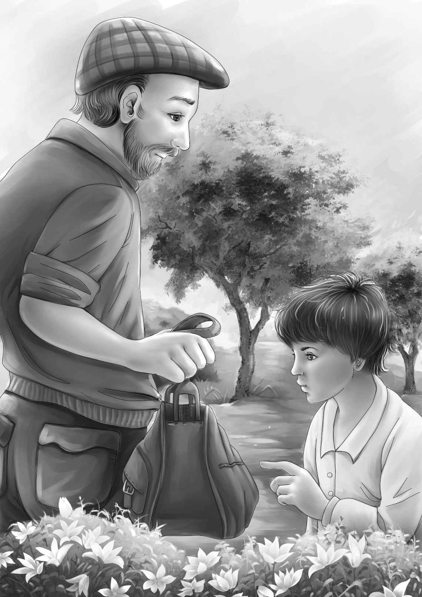

Chapter 13 Just in Time！
第二天，简姑婆的状态果然好多了。当亨利说他们想再去小木屋时，她不由得有些吃惊。
“为什么还要去呢？”她问。
亨利回答道：“要是真有人住在那儿的话，我们可能随时会有新的发现。”
“那带上山姆一起去吧！”简姑婆的口气一如往常。
“可怜的山姆！”班尼说，“他不想去。”
“说来奇怪，”山姆说，“我似乎对小木屋越来越感兴趣了。”
他们到处找不到望望，只能撇下它出发了。不一会儿，五个人就来到了小木屋。屋里的一切都保持着原样，包括架子上的鸡蛋。他们正站在那儿，突然听到有人走进小树林的声音。
“快！”亨利低声说，“有人来了，快爬到树上去！”
门口有棵大树，几个孩子都是爬树高手——包括维莉，她第一个爬了上去，班尼则紧随其后。“快上来！”他低声催促着杰西。他藏在茂密的树叶里，将杰西一把拉了上去。最后爬上去的是亨利。
“我就不上去了，”山姆说，“我要在这儿等着，看看究竟是谁来了。”
亨利朝树下看了看，低声对杰西说：“是威威！不知道他来这儿干什么。”
山姆静静地站着，直到威威从灌木丛后走出来，他才说道：“你好啊，威威！”
“你……好！”威威目瞪口呆。
“威威，你来这儿干什么？”山姆问道。
“拿东西。”威威回答。
“拿什么东西？”
威威默默地指了指盘子和桌子。
“这些盘子是你的吗？”山姆问。
“不是。”威威摇了摇头。
山姆温和地问道：“那么是谁的，威威？”
“安迪。”威威的语气如此自然，就像安迪一直住在家里一样。
“安迪？安迪在这附近吗？”
“现在不在。坐巴士车了。”
“安迪一直住在小木屋里吗？”
“嗯。”威威说。
“那他为什么要坐巴士车离开？”山姆问。
“去海边。”威威说。
“可是，为什么？”山姆又问。
“她恨他，她想开枪打他。”威威回答道，不停地点着头。
“开枪打他？简小姐决不会开枪打他的！”
大家都惊讶地看着威威。
“会的，”威威说，“她是这么说的。我都听见了。她说‘我真想打他一枪’。”
亨利抬头看了看杰西，话都来不及说，就滑下树去。
“快，山姆！”亨利说，“我们得赶紧去追安迪！”
“不要，”威威张大了嘴说，“他坐巴士车走了。”
可是奥登家的四个孩子和山姆已经冲下山了。班尼回过头大声说：“简姑婆不恨他，威威！她是瞎说的！”
“别说了！”杰西大声喊道，“咱们追巴士要紧！”
“你们追不上的，”山姆回应道，“车已经开了15分钟了。”
“无论如何，咱们都要追上它。”班尼喊道，“它总得停下来让乘客下车吧！”
他们跑向山姆停在院子里的老爷车，一股脑地钻进车里，立即出发了。班尼和亨利气喘吁吁地坐在山姆身旁，直到缓过劲来，亨利才开口说道：“我敢打赌，安迪已经知道简姑婆住回老房子了，可是他担心简姑婆不愿意见他。”
班尼说：“我也这么认为。我还记得姑婆说过，‘我真想打他一枪！’”
杰西补充道：“当时威威正好在厨房里卖芦笋，所以这些话都被他听到了！”
“哦，天哪！真是错上加错！”维莉说，“简姑婆说的不是真心话，可威威并不知道这一点，才把话传给了安迪，因此安迪就又跑了。”
“山姆，请再开快一点！”亨利说，“要是安迪出了巴士站，上了火车，到时候我们再怎样都追不上啦！”
杰西说：“是啊，可我们还不知道他坐的是哪辆巴士呢！”
“我知道，”山姆说，“今天早晨只有一班巴士，他只可能在那辆车上。可是，我们追上了车又怎么认出他来呢？”
“这好办，我们都知道他喜欢歪着嘴笑！”亨利说，“咱们要告诉他，是他误解了简姑婆。就让维莉跟他解释吧，他会相信维莉的。”说完，他冲维莉笑了笑。
“可关键问题是，我们怎么才能让巴士停下来？”杰西说。
班尼说：“这太容易啦！看到巴士后，山姆就拼命按喇叭，我们大声叫住司机。”
“这辆破车肯定没想到它还能跑这么快！”山姆说，“连我自己都没想到呢！”
老爷车一路丁零当啷、嘎吱嘎吱地飞奔着。
终于，班尼喊了起来：“看那辆蓝色巴士！快，山姆，快按喇叭！”
山姆使劲按着喇叭，巴士司机也鸣笛回应。他透过后视镜看到了孩子们，然后指了指前面的火车站，那儿停着一辆火车，正准备发车。
巴士停了下来，司机从车窗里探出脑袋：“你们怎么了？想上车吗？”
“不是的，”亨利说，“我们待会儿再跟您解释！”说着，大家迫不及待地冲出老爷车，跑向巴士车门。
亨利大声问道：“车上有没有一个高个子的老人？他笑的时候会歪着嘴！”
“我不知道谁会那样笑，”司机笑着回答，“不过车上的确有个高个子老人，他在后排，正准备下车。”
大家望向巴士的后排，果然看到一个高个子正要下车。他的头发是棕色的，并没有花白。
“您好，”班尼大声喊道，“请问，您是安迪么？”
“没错，是我，”陌生人说，“怎么了？”他看了看维莉，然后笑了。他笑的时候果然歪着嘴。他往前走了几步，走近奥登家的四个孩子。
“太好啦！”维莉说，“是简姑婆让我们来找您的！求求您，千万别离开，听我们把要说的话讲完。”
“简姑婆？”那人惊讶地问道。他摇了摇头，转头望向火车，“不，简不想见我，就是这样。”
“请过来坐上我们的车吧，”维莉央求道，“简姑婆非常想见您！”
“她说她恨我，这我可以理解，可她居然说想开枪打死我……”安迪喃喃道。
“哦，您不明白，”亨利说，“这是威威告诉您的，是吧？简姑婆不是这个意思。她只要累了，就会口不择言。她年轻的时候一定也是这样吧？”
“希望你们说的是真的。”安迪说。
直到这时，山姆才开口：“当然，你可以相信这些孩子说的每一句话。他们从来都知道自己在做什么。”
安迪看了看山姆，又看了看孩子们。“好吧，”他说，“那我就再试一次吧！我和你们一起回去，如果你们想让我这么做的话。”
“百分百地想！”杰西说，“这正是我们的愿望。”

看到安迪提着一个小包，亨利说：“我把您的包放到后备厢吧！”
“不用了，谢谢你，”安迪又展开了他那标志性的笑容，“无论去哪里我都会随身带着这个包。”
看起来包并不大，班尼不禁开始猜测里面装了什么：是换洗衣服，还是藏宝图，或是手枪？班尼猜得不亦乐乎。至于答案嘛，他还得等一等才能知道！